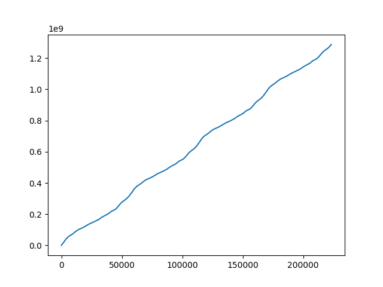
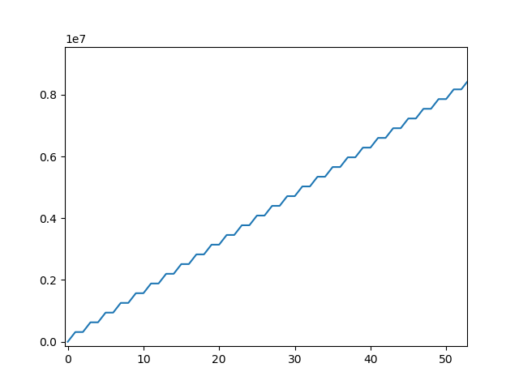

Analyzing CLSM marker (Leica SP8)¶
Not always it is completely documented by the manufacturer of a microscope how the laser scanning is implemented. Meaning, how the frame and line marker are integrated into the event data stream. Below, it is briefly outlined on a test case how for a given image the event stream can analyzed. The example data illustrated below, was recored on a Leica SP8 with three hybrid detectors and PicoQuant counting electronics.
First, the data corresponding to the image needs to be exported from the Leica file container to yield a PTU file that
contains the TTTR events. This file is loaded in tttrlib and the event types, the routing channel numbers, the
macro time, and the micro time are inspected.
from __future__ import print_function
import tttrlib
import numpy as np
import pylab as p
data = tttrlib.TTTR('./examples/Leica/SP8_Hybrid_detectors.ptu', 'PTU')
e = data.get_event_type()
c = data.get_routing_channel()
t = data.get_macro_time()
m = data.get_micro_time()
As a first step, the routing channels are inspected to determine the actual channel numbers of the detectors. By making a bincount of the channel numbers the number how often a channel occurs in the data stream and the channel numbers in the data stream can be determined.
# Look for used channels
y = np.bincount(c)
print(y)
p.plot(y)
p.show()
For the given dataset three channels were populated (channel 1, channel 2, channel 3, and channel 15). The microscopy is only equipped with three detectors. The counts per channel were as follows
1 - 2170040
2 - 43020969
3 - 198919134
15 - 8194
Note
Usually, the TTTR records utilize the event type to distinguish markers from photons. Here, Leica decided to use the routing channel number to identify markers.
Based on these counts channel 15 very likely identifies the markers. The number of events 8090 closely matches a multiple of 2 (8194 = 4 * 1024 * 2 - 1 + 3). Note, there are 1024 lines in the images, 4 images in the file.
By looking at the macro time one can also identify that there are four images in the file, as intensity within the image in non-uniform. Hence, the macro time fluctuates.
To make sure that the routing channels 1, 2, and 3 are indeed detection channels, one can create (in a time-resolved experiment) a bincount of the associated micro times.
y = np.bincount(m_ch_1)
p.plot(y)
p.show()
y = np.bincount(m_ch_2)
p.plot(y)
p.show()
y = np.bincount(m_ch_3)
p.plot(y)
p.show()
Next, to identify if in addition to the channel number 15 the markers are identified by non-photon event marker we make a bincount of the channel numbers, where the event type is 1 (photon events have the event type 0, non-photon events have the event type 1).
y = np.bincount(c[np.where(e==1)])
print(y)
p.plot(y)
p.show()
The bin count yield the following:
1 - 1950
2 - 48349
3 - 172871
This means we never have events where the channel number is 15 and the event type is 1. Moreover, the number of special events scales with the number of counts in a channel. Thus, the special events are very likely to mark overflows or gaps in the stream.
To sum up, channel 1, 2, and 3 were determined as the routing channels of the detectors. Channel 15 is the routing channel used to inject the special markers. Next, we inspect the micro time and the macro time of the events registered by the routing channel 15.
m_ch_15 = m[np.where(c == 15)]
p.plot(m_ch_15)
p.show()

The plot of the micro times for the events of the routing channel 15 reveals, that the micro time is either 1, 2, or 4. A more close inspection reveals that a micro time value of 1 is always succeeded by a micro time value of 2.

A micro time value of 4 is followed by a micro time value of 1.

This means, that the micro time encodes the frame marker and the line start/stop markers.
micro time 1 - line start
micro time 2 - line stop
micro time 4 - frame start
Note
The first frame does not have a frame start.
Next, the macro time of the events where the routing channel number equals 15 is inspected. As anticipated, the macro time increases on first glance continuously. On closer inspection, however, steps in the macro time are visible.
To sum up, in the Leica SP8 PTU files
line and frame markers are treated as regular photons.
the line and frame markers are identified by the routing channel number 15
the type of a marker is encoded in the micro time of channels with a channel number 15
Note
Usually, the TTTR records utilize the event type to distinguish markers from photons. Here, Leica decided to use
the routing channel number to identify markers. When opening an image in tttrlib this special case is considered
by specifying the reading routine.